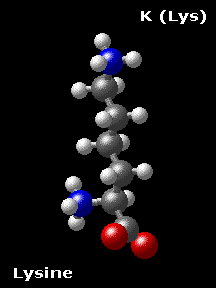

The Biology Project > Biochemistry > The Chemistry of Amino Acids
Lysine K (Lys)
Chemical Properties:
Basic
(Basic R-group)Physical Properties:
Polar (positively charged)
Lysine. an essential amino acid, has a positively charged ε-amino group (a primary amine).Lysine is basically alanine with a propylamine substituent on theβcarbon. The ε-amino group has a significantly higher pKa (about 10.5 in polypeptides) than does the α-amino group.
The amino group is highly reactive and often participates in a reactions at the active centers of enzymes. Proteins only have one α amino group, but numerous ε amino groups. However, the higher pKa renders the lysyl side chains effectively less nucleophilic. Specific environmental effects in enzyme active centers can lower the pKa of the lysyl side chain such that it becomes reactive.
Note that the side chain has three methylene groups, so that even though the terminal amino group will be charged under physiological conditions, the side chain does have significant hydrophobic character. Lysines are often found buried with only theεamino group exposed to solvent.
 
The Biology Project > Biochemistry > The Chemistry of Amino Acids
http://biology.arizona.edu
All contents copyright © 2003. All rights reserved.